Step 3: Package your components

Brief Introduction to CosMIC:
The Component Synthesis
using Model Integrated Computing (CoSMIC) project is a MDA toolset being
developed by the Institute for Software Integrated Systems (ISIS) at
1. Model and analyze distributed real-time and embedded application functionality and QoS requirements.
2. Synthesize CCM-specific deployment metadata required to deliver end-to-end QoS to DRE applications.
The CoSMIC toolsuite provides modeling of DRE systems, their QoS requirements, and QoS adaptation policies used for DRE application QoS management. The component behavior, their interactions, and QoS requirements are modeled using a domain specific modeling language that adheres to the OMG Deployment & Configuration (D&C) specification (ptc/2003-07-08). CoSMIC enables modeling the standards-based CCM components.
Hand-writing the required XML descriptors to configure our components is tedious and error prone. We therefore utilize CosMIC (we specifically use a subset of CosMIC called PICML, which stands for Platform-Independent Component Modeling Language) to generate the bulk of descriptors for us.
For more information on CosMIC, please refer to the following article:
CoSMIC: An MDA Generative Tool for Distributed Real-time and Embedded Applications.
Importing IDL to PICML
To quick start our Stock Quoter modeling process in GME, CoSMIC
introduces idl_to_picml , which is an executable program that imports
the IDL files you just created into PICML.
- Make sure
%COSMIC_ROOT%\binis included in the PATH variable, e.g., c:\Program Files\ISIS\CoSMIC\bin. - Open a command prompt, run VCVARS32.BAT from the MSVC .NET folder if you
haven't done so. It will set the environment for using Microsoft Visual Studio
.NET tools so that idl_to_picml works properly.
in my machine, VCVARS32.bat is in C:\Program Files\Microsoft Visual Studio .NET 2003\Vc7\bin - In the same command prompt, change directory to
Quoter\Simple, and type the following command:
> idl_to_picml -I%CIAO_ROOT% -x Quoter -r .
idl_to_picml will parse your IDL files and generated aQuoter.xmefile in theQuoterdirectory. Note that if -x option is not used, the default xme file name will bePICML_default_xme_file.xme.
When this command is run a second time, be sure to delete all E.idl files first!
- Start GME, select File->Import xml.., and choose the xme file just generated. You should be able to see an imported PICML model similar to the one shown in Figure 2.
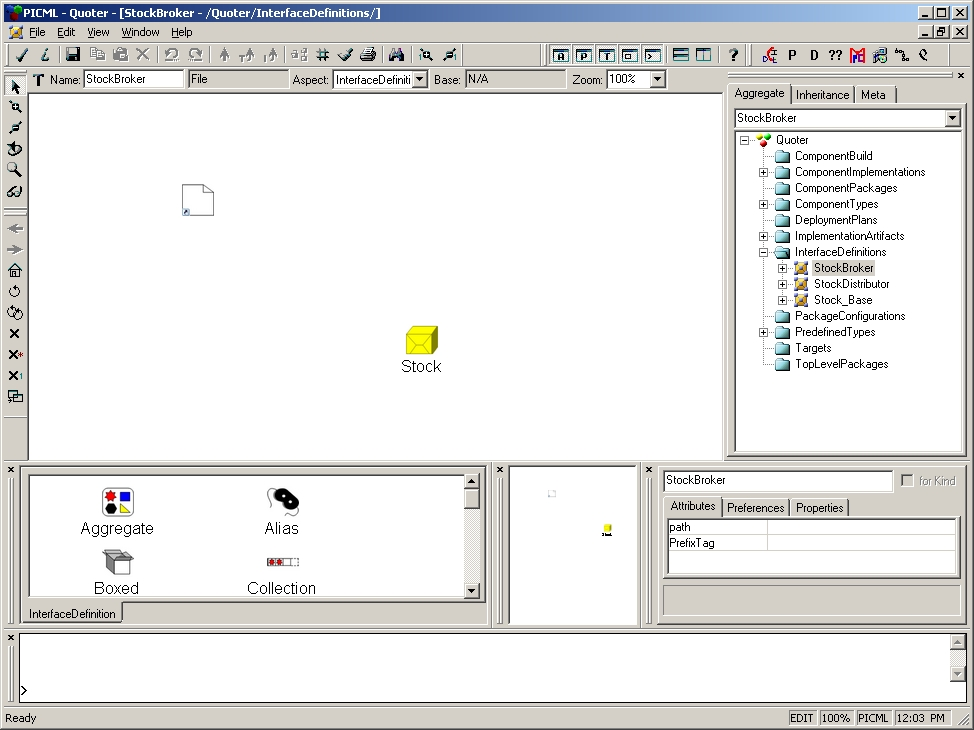
Figure 2
In the Browser of the generated model, the PredefinedTypes folder contains a bunch of atomic datatype elements that will be referenced by other modeling parts later. You don't have to worry about them for now. The models in InterfaceDefinitions folder are the PICML representations of the IDL files you just imported. Double-click to open StockBroker, it will show you a white, document-like entity which represents a <<FileRef>> instance and a yellow box-shaped entity representing a <<Package>> instance. Their equivalent representations in IDL files are "#include" and "module" respectively. Figure 3 gives you a clear view of GME representation of all the 3 idl files created. We will cover the other folders in the next section.
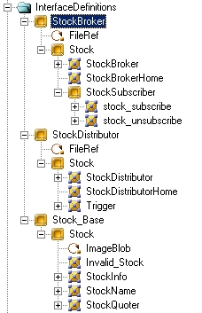
Figure 3
Now
we are ready to model the rest of the Stock Quoter systems.
Building Stock Quoter system in PICML
This section describes modeling the Quoter application using PICML. If you have trouble producing a functioning model from this tutorial, please see the, pre-built Quoter model which is provided for your reference. This model contains all elements created as part of this tutorial.
Note: To import an XML file in GME, select File->Import XML.. from GME and choose your XML model
The PICML paradigm is designed for the OMG Deployment & Configuration (D&C) specification (ptc/2003-07-08), so the modeling process is straightforward if you are familiar with the specification. Please see the DAnCE project for more information. For those who hate specification (including me, :-)), an overview of D&C and as well as a tutorial of D&C and CCM can help to reduce the learning curve. In addition, it is also helpful to read through documentation which originally came from the TAO's Developer's Guide 1.4a (CIAO and CCM) which thoroughly describes the various descriptors required for a component (*.iad, *.ccd, *.cid, etc). This chapter is available here.
Table of Contents
- ImplementationArtifacts
- ComponentImplementations
- ComponentPackages
- PackageConfiguration
- TopLevelPackage
- Targets
- DeploymentPlan
The complete PICML Quoter model consists of modeling elements distributed across various folders. If you used idl_to_picml to generate the initial model, you will see that it has created all these folders and some of the tedious boilerplate modeling for us. The rest of the section will explain the purpose of each folder as well as the modeling entities contained in these folders. We will also show how to model some of the folders that have to be done by hand.
Important: The interpreters that generate deployment artifacts expect very strict constraints in the model. When you finish your model, and any time you wish to generate anything, it is a good idea to check constraints by clicking on File->Check->Check All in GME. This will help you find many logic errors in your model.
ImplementationArtifacts
This folder contains implementation artifacts associated with components. idl_to_picml has created these artifacts for us, with their dependency relationships correctly captured. In order to match the current DAnCE specification, both execPoints should be removed. Figure 4 shows the Implementation Artifacts for StockBroker.
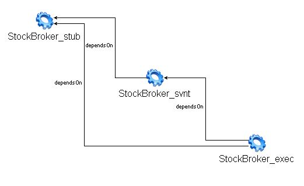
Figure 4.
ComponentImplementation
This folder contains models that describe the implementations of component interfaces. In the Quoter example, we will have two monolithic component implementations - named StockDistributorImplementation and StockBrokerImplementation - and an assembly component implementation named StockQuoter, which is an assembly of StockDistributorImplementation and StockBrokerImplementaion. idl_to_picml has created the monolithic component implementations for us, as shown in figure 5 for example, but we have to change this model in order to meet the DAnCE specification.
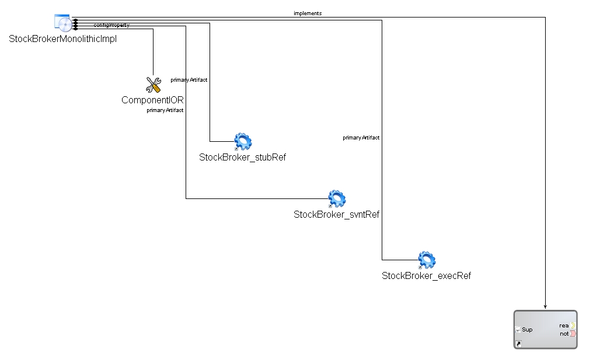
Figure 5
First thing we need to do is delete the following attributes.
After that we need to create a reference to the artifacts.
Don't forget to perform the previous steps for StockDistributor!Quoter/ImplementationArtifacts/StockBrokerArtifacts.
This can be established by expanding the tree view and drag StockBroker_exec to the
<<ComponentImplementationArtifact>> and StockBroker_svnt to
<<ComponentServantArtifact>> on the window. On succes,
the <<ComponentImplementationArtifact>> icon should change into a
<<ImplementationArtifactReference>> icon.
The same has to be done for the ComponentServantArtifact. Mind that the entry point in code should be
implemented in the right namespace (::Components::EnterpriseComponent_ptr instead of a ::Components::HomeExecutorBase_ptr. See
StockBroker_exec.h for more details.
create_Stock_StockBrokerComp_Impl) in the attribute window.
CIAO_Stock_StockBroker_Impl). In this case the function is called
"create_Stock_StockBroker_Servant". See StockBroker_exec.h and
StockBroker_exec.cpp for more details.
 . First click
StockBrokerMonolithicImpl and then ComponentServantArtifact.
. First click
StockBrokerMonolithicImpl and then ComponentServantArtifact.
The result of these actions is shown in figure 5a.
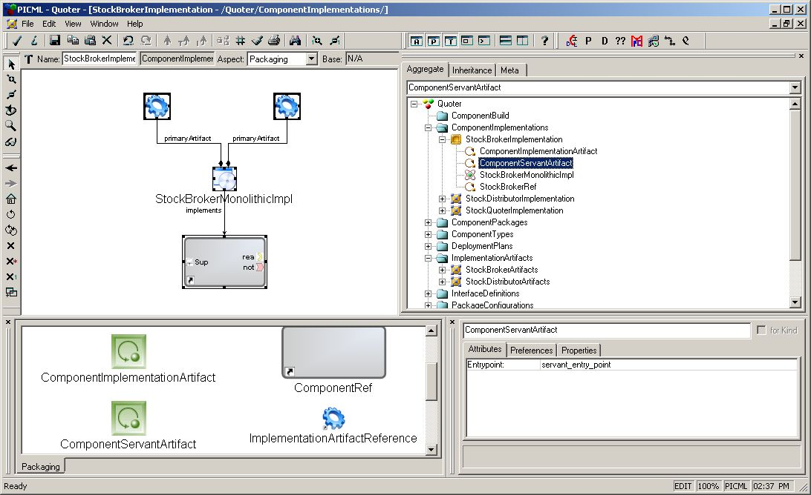
Figure 5a
Assembly components provide a boundary for the composition
of monolithic components and even other assemblies. Assembly components do not
provide actual implementations for their interface, it is a virtual component
that delegates its ports and attributes to one or more of the entities it
contains. There are slight differences between modeling an assembly and
modeling a monolithic component. Since the assembly is a virtual component, it
is not necessary to model a MonolithicImplementation.
Instead, instances of other components are placed within the assembly
and connected. Let's try to assemble the StockQuoter.
- Right click the ComponentImplementations folder, choose Insert Model->ComponentImplementationContainer, rename it as "StockQuoterImplementation" in the Attribute Panel. Double click to open it.
- From the Part Browser, drag a <<ComponentAssembly>> to the modeling window, name it "StockQuoter". Double click to open it.
- Now we will create two instances for interfaces StockBroker and StockDistributor.
To do that, expand the folder InterfaceDefinitions, then expand the
InterfaceDefinitions/StockBroker, then
InterfaceDefinitions/StockBroker/Stock until the interface definition of StockBroker shows.
While expanding the tree, always keep the "StockQuoter" <<ComponentAssembly>> window open.
Then press the ALT key and drag
Quoter/InterfaceDefinitions/Broker/Stock/StockBrokerin the browser to the "StockQuoter" <<ComponentAssembly>> window' Repeat the same steps forQuoter/InterfaceDefinitions/Distributor/Stock/StockDistributor, and you will see two instances of component interfaces have been created as shown in Figure 6 (the black line in the figure only indicates .mapping)
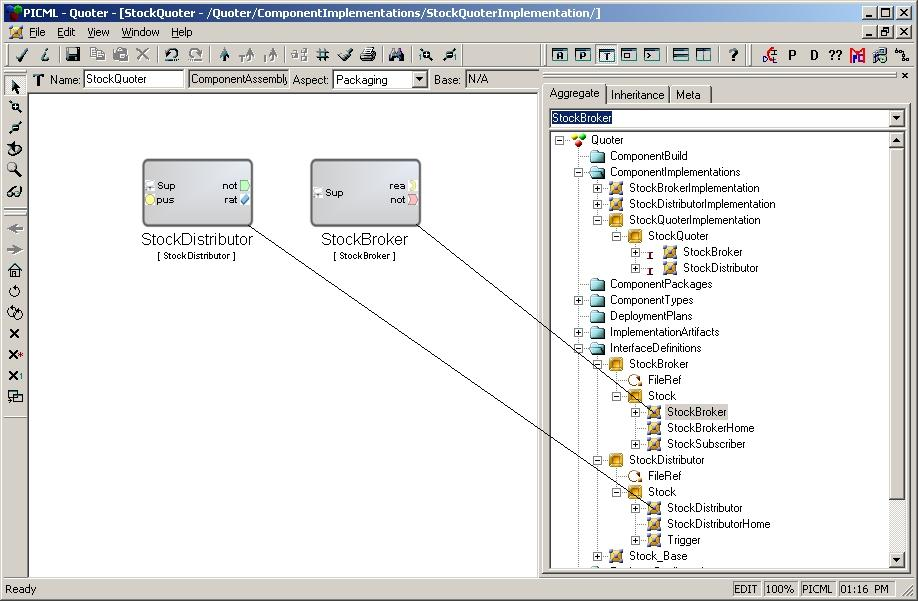
Figure 6
- Create an <<PublishConnector>> by dragging it from the "Part browser" onto the "StockQuoter" window.
- Now assemble the components together according to Figure
1 (make sure you change to connect mode
 )
and the resulting assembly model should look like Figure 7. Note that to create connections between StockDistributor.notify_out and StockBroker.notify_in,
you will need the intermediate connector <<PublishConnector>>.
)
and the resulting assembly model should look like Figure 7. Note that to create connections between StockDistributor.notify_out and StockBroker.notify_in,
you will need the intermediate connector <<PublishConnector>>.
- In one of the previous steps we've removed ComponentIOR. With ComponentIOR one could
configure the name of the IOR file. This is still needed. In this step we need to create them again. This can
be done by dragging two <<Property>> items from the part browser onto the window;
one for StockBroker and one for StockDistributor. The following steps should be taken in order
to configure both properties correct:
- Double click on one of them. An empty window appears and the part browser only has one part, called "DataType". Drag this part onto the empty window.
- In the tree window, browse to
Quoter/PredefinedTypes - Drag tree item "String" onto the "DataType" item.
- Go back to the previous window and repeat these steps for the other <<Property>>.
- The name of each <<Property>> should be "edu.vanderbilt.dre.DAnCE.InstanceIOR"
- One of the values should be "StockBroker.ior"; the other one should be "StockDistributor.ior"
{kind=link}
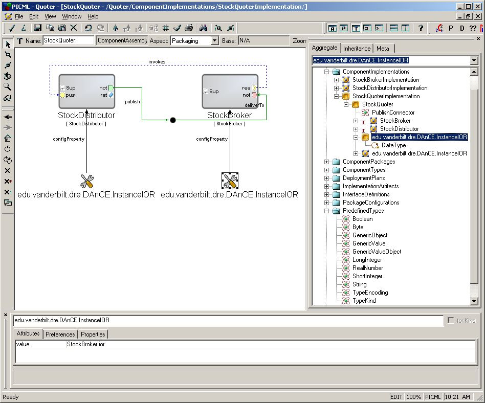
Figure 7
ComponentPackage
This folder contains deployable component packages. Every instance in an assembly should have a corresponding monolithic implementation and packaged in a ComponentPackage. To create a package for StockBroker.instance
- Right click folder ComponentPackages , insert a <<PackageContainer>>, name it "Broker". Double click to open it.
- From the PartBrowser, add the following:
- a <<ComponentPackage>> named "Broker";
- a <<ComponentImplementationReference>> named "ComponentImplBrokerRef";
- a <<ComponentRef>> named "ComponentBrokerRef";
- Now we need to create references for "ComponentImplBrokerRef" and "ComponentBrokerRef".
To create a reference in GME, simply drag the tree node in the Browser "into" the reference model.
We need to refer <<ComponentImplementationReference>> "ComponentImplBrokerRef" toQuoter/ComponentImplementations/StockBrokerImplementation/StockBrokerMonolithicImpland <<ComponentRef>> "ComponentBrokerRef" toQuoter/InterfaceDefinitions/StockBroker/Stock/StockBroker.
For example, you should drag the tree nodeQuoter/ComponentImplementations/StockBrokerImplementation/StockBrokerMonolithicImpl into <<ComponentImplementationReference>> "ComponentImplBrokerRef".
Check GME manual(tutorials) for more information. - Switch to Connect Mode and create two connections according to the following relationship.
- <<ComponentImplementationReference>> "ComponentImplBrokerRef" implements <<ComponentPackage>> "Broker"
- <<ComponentPackage>> "Broker" realizes <<ComponentRef>> "ComponentBrokerRef".
The model you built should resemble Figure 8.
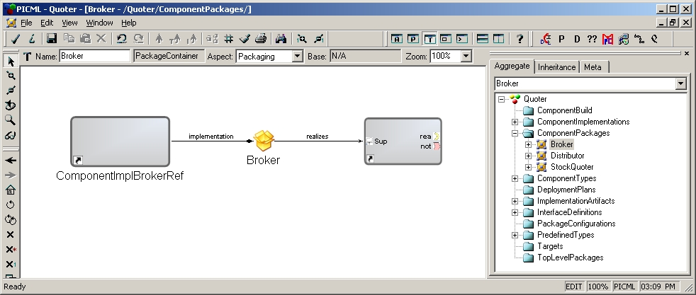
Figure 8Now create a StockDistributor following the same steps.
-
We will also need to create a component package for the assembly component StockQuoter. Remember assembly component is a virtual component, it does not "realize" a
certain interface, so different from the Broker and Distributor packages, the StockQuoter does not need a <<ComponentRef>>. To create this model:
- Insert a <<ComponentPackage>> named "StockQuoter"
- Add a <<ComponentImplementationReference>> named "ComponentImplStockQuoterRef", refer it to
Quoter/ComponentImplementations/StockQuoterImplementation/StockQuoter - Switch to connect mode and connect <<ComponentImplementationReference>> "ComponentImplStockQuoterRef" with
<<ComponentPackage>> "StockQuoter", as in Figure 9.
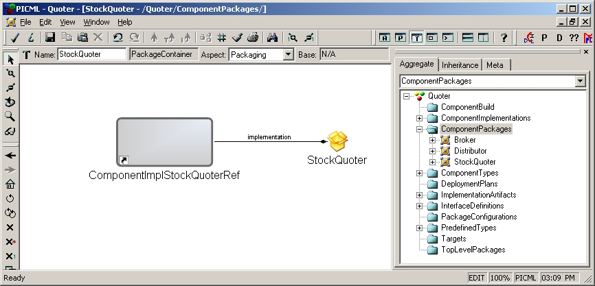
Figure 9
InterfaceDefinitions
Do the same for Distributor.
Quoter/InterfaceDefinitions/StockBroker/Stock and double click it.
PackageConfiguration
This folder contains just one model capturing specific configuration of Component packages.
- In the folder PackageConfiguration, and create a <<PackageConfigurationContainer>>, name it "Default", double click to open it.
- Add a <<PackageConfiguration>> named "default" and a <<ComponentPackageReference>>, name it "StockQuoter", connect "Default" to "StockQuoter"
- Refer <<ComponentPackageReference>> StockQuoter to
<<ComponentPackage>>
Quoter/ComponentPackage/StockQuoter/StockQuoter
(Not <<ComponentImplementationReference>>Quoter/ComponentPackage/StockQuoter/ComponentImplStockQuoterRef!)
ToplevelPackage
This folder contains one model capturing information about the top-level element that will be fed to the application.
- In the folder ToplevelPackages, create a <<ToplevelPackageContainer>> and name it "Default". Double click to open it.
- Add a <<ToplevelPackage>> named "ToplevelPackage" and a <<PackageConfigurationReference>>, name it "Default", connect "ToplevelPackage" to "Default"
- Refer "Default" to
Quoter/PackageConfiguration/Default/Default
Targets
This folder contains domain-specific models capturing information about the target environment in which component-based application will be deployed. In this Quoter example, we can either deploy the two components into ONE host, or into TWO different host. We will deploy the Quoter into two different host.
- In the folder Targets, insert a new <<Domain>> named "Domain"; double click to open it.
- From the Part Browser, add two <<Node>>s, named "Broker" and "Distributor" respectively.
Now we are ready to deploy our Components to the actual physical environment.
DeploymentPlan
This folder contains a plan model that captures information about the assignment of component to nodes.
- In the folder DeploymentPlan, insert a model <<DeploymentPlan>>; name it "Plan". Double click to open it.
- From the PartBrowser, add the following:
- Two <<NodeReference>> named "Node_Broker" and "Node_Distributor"
respectively, refering to
Quoter/Targets/Domain/BrokerandQuoter/Targets/Domain/Distributorrespectively.
A <<CollationGroup>>, named "DefaultGroup", is added automatically when adding a <<NodeReference>>. - Two <<ComponentRef>> named "StockBroker" and "StockDistributor"
respectively, refering to
Quoter/ComponentImplementations/StockQuoterImplementation/StockQuoter/StockBrokerandQuoter/ComponentImplementations/StockQuoterImplementation/StockQuoter/StockDistributorrespectively.
Note that the <<ComponentRef>> in DeploymentPlan is not referring to the interface, but rather the actual instance of the implementation.
The model should look like this:
- Two <<NodeReference>> named "Node_Broker" and "Node_Distributor"
respectively, refering to
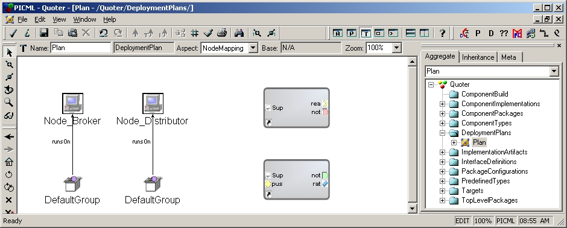
Figure 10.
- Now we need to associate <<ComponentRef>> StockBroker to the
<<CollocationGroup>> running on the <<NodeReference>> Node_Broker, and <<ComponentRef>> StockDistributor to the
<<CollocationGroup>> running on the <<NodeReference>> Node_Distributor. To do that, switch the Edit Mode Bar to Set Mode
(
 ), and move the cursor to the <<CollocationGroup>> running on
<<NodeReference>> Node_Distributor, right-click on it. You will find the cursor is changed to set mode cursor, and only the <<CollocationGroup>>
you clicked in is highlighted, as shown in Figure 11.
), and move the cursor to the <<CollocationGroup>> running on
<<NodeReference>> Node_Distributor, right-click on it. You will find the cursor is changed to set mode cursor, and only the <<CollocationGroup>>
you clicked in is highlighted, as shown in Figure 11.
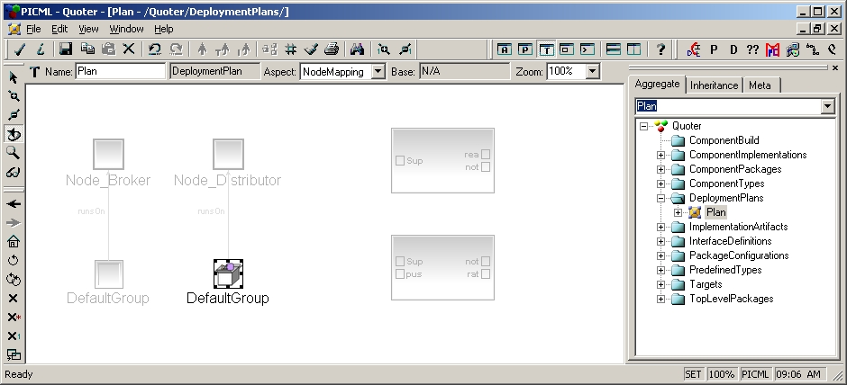
Figure 11
Now move your cursor to <<ComponentRef>> StockDistributor, and left-click it, so that it looks like Figure 12.
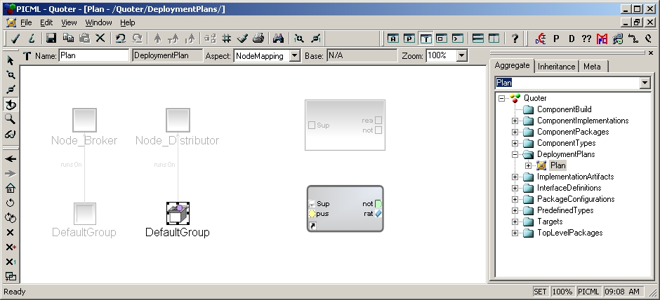
Figure 12
This operation associates StockDistributor component to the <<CollocationGroup>> running on Distributor node. To do the same with Broker, just right-click on the associate <<CollocationGroup>>, and left-click on StockBroker <<CollocationGroup>> which is then highlighted.
Up to this point, we are basically done with the modeling part. Before we generate anything from this model though, please DO remember to check the constraints of the model as we mentioned earlier.
After we are done with the modeling, the Deploymentplan interpreter that comes along with PICML will help us to generate a Plan.cdp file. Please make sure you generate this file to Quoter/descriptors. Note that to get the example working,a Node Map file (NodeMap.dat) in Quoter/descriptors should be created to map logical nodes to NodeManager object references,e.g:
DistributorNode corbaloc:iiop:localhost:30000/NodeManager
BrokerNode corbaloc:iiop:localhost:40000/NodeManager
Abdullah Sowayan
$Id$